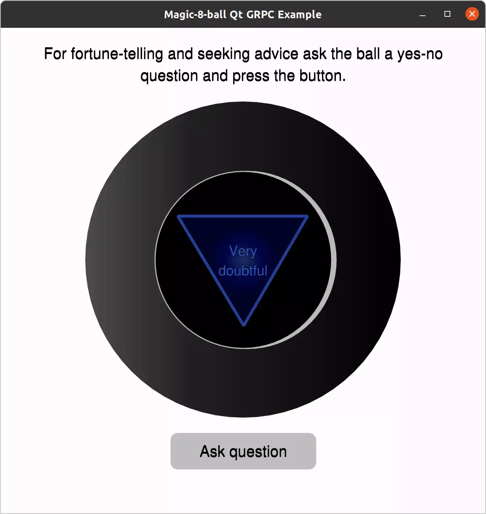

Magic 8 Ball
Creating a HTTP2 connection between a Qt GRPC client and a C++ gRPC server.
Magic 8 ball shows an answer it receives from a server:

Magic 8 ball has the following components:
magic8ballQt GRPC client application that includes the qt_add_protobuf() and qt_add_grpc() CMake functions for message and service Qt code generation.SimpleGrpcServerapplication that calls C++ gRPC plugin for generating server code and implementing simple server logic.
Note: you need the C++ gRPC plugin installed. Find details here: Module prerequisites
Both components use generated messages from the protobuf schema described in the exampleservice.proto file:
syntax = "proto3";
package qtgrpc.examples;
message AnswerRequest {
string message = 1;
}
message AnswerResponse {
string message = 1;
}
service ExampleService {
rpc answerMethod(AnswerRequest) returns (AnswerResponse) {}
}
The client application binds on the localhost with port 50051:
QGrpcChannelOptions channelOptions(QUrl("http://localhost:50051", QUrl::StrictMode)); m_client->attachChannel(std::make_shared<QGrpcHttp2Channel>(channelOptions));
And sends a request to the server part:
void ClientService::sendRequest() { // clean error on UI before new request emit errorRecieved(""); AnswerRequest request; request.setMessage("sleep"); m_client->answerMethod(request, m_response.get()); }
Click the Ask question button to send the request to the SimpleGrpcServer application.
The SimpleGrpcServer application chooses a random answer from the list of answers and sends the data to the client's port.
Status ExampleServiceServiceImpl::answerMethod(grpc::ServerContext *, const AnswerRequest *request, AnswerResponse *response) { if (request->message() == "sleep") QThread::msleep(2000); response->set_message(std::string(answers[generateRandomIndex()])); return Status(); }
After receiving a response the client application shows the answer.